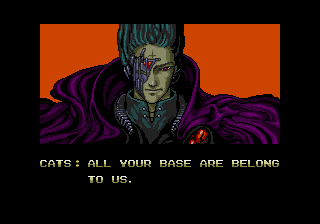

Tecnologia e Classe 23/01/25
Recomendação de vídeos
A União das Big Techs com o fascismo
- Vocês já ouviram falar do que a IBM estava fazendo durante a Segunda Guerra Mundial?
- https://en.wikipedia.org/wiki/IBM_and_the_Holocaust
- Em resumo, operando por intermédio de subsidiárias na Alemanha e Polônia a empresa americana prOveu tecnologia de holerites (cartões perfurados) que foram essenciais para o extermínio da população judaica
- E isso não foi coisa pouca: o mercado alemão foi o 2º maior da empresa estadunidense, mesmo durante o esforço de guerra
- Agora eu chamo atenção de vocês para essa foto aqui:

-
Na foto: Mark Zuckerberg (Facebook), Jeff Bezos (Amazon), Sundar Pichai (Google) e Elon Musk. Musk é o maior exemplo do burguês que torna ao fascismo para defender seus interesses econômicos, mas a inauguração do Trump mostrou que agora é hora de fechar negócios.
-
Outras pessoas importantes que também estavam na inauguração: Shou Chew (CEO do TikTok), Joe Rogan e Dana White (ex UFC e board do Facebook).
-
Só faltou o Sam Altman né? Não tem problema...
-
Nós já comentamos sobre a guinada à extrema direita do Musk e como ele e Trump agora são BFFs. E como o Zuck está seguindo essa mesma linha. A presença do CEO do TikTok e a 'suspensão' do banimento pelo Trump são pontos a se notar

-
Se você não é um bilionário fica a pergunta: precisa ainda desenhar pra você entender como se interliga o poder econômico e o poder do estado?
-
A ideia é que o estado media o conflito entre a classe que tudo possui (burguesia) e a classe que possui apenas o seu trabalho. Porém...
-
O que vemos agora, podem chamar do que quiserem, é a burguesia assumindo que vai ser o próprio juiz dessa luta.
-
Ao mesmo tempo que o Trump aponta para o inimigo "interno" dos imigrantes e LGBT para entreter sua base os EUA parecem se voltar para um projeto de colonialismo da América
-
Só que o esquema pra gente pegar é que eles SEMPRE foram isso, e essa aqui é só pros estadunidenses: o fascismo é a lógica capitalista das colônias reproduzida agora na metrópole
-
E as big techs vão ajudar - e lucrar muito no processo - o governo Trump a realizar seus objetivos:
- Deportação de imigrantes em massa
- Desumanização de pessoas LGBTQIAP+
- Combate aos direitos reprodutivos das mulheres
- Imperialismo e promoção de uma hegemonia cultural estadunidense (liberdade de expressão né)
Por fim, é óbvio que o Elon é nazista gurizada, eu passei o ano passado inteiro dizendo isso, mas se quiserem um vídeo excelente vejam aqui:
Não, o Trump não ganhou U$50bi com a sua criptomoeda
https://www.citationneeded.news/trump-memecoin-valuation/
- Aqui no canal a gente fala muito que cripto vive de especulação e golpes, mas não é sempre que entramos em detalhes
- Hoje eu queria usar os tokens do TRUMP e da MELANIA para explicar uma das maneiras que isso pode funcionar
“A memecoin $TRUMP — um ativo financeiro que não existia na tarde de sexta-feira — agora representa cerca de 89% do patrimônio líquido de Donald Trump”, escreveu a Axios, que o apelidou de “cripto bilionário”. “. O valor totalmente diluído de todos os tokens foi considerado no sábado ao meio-dia, como sendo US$ 30 bilhões, um valor alcançado menos de um dia após o token ter sido colocado no mercado,
- Não precisa ser muito esperto pra perceber que esses números não podem ser reais, mas eu queria que a gente entedesse por que:
Para usar $TRUMP como exemplo, as pessoas estão atualmente negociando essas moedas por cerca de US$ 53 cada. Há 200 milhões deles em circulação, o que coloca o “valor de mercado” do token (já altamente questionável, como explicarei em breve) em cerca de US$ 10,7 bilhões. Por fim, ao longo de um período de três anos (supondo que Trump não perca o interesse ou altere os parâmetros do acordo), 1 bilhão de tokens deverão ser lançados. É esta oferta — daqui a três anos — que está a ser multiplicada pelo preço atual dos tokens para atingir estimativas na ordem das dezenas de milhares de milhões de quanto o “património líquido” de Trump aumentou.
-
Então imaginem que eu vou criar uma cripto chamada $TECLAS que até o fim da sua emissão de tokens irá criar 1mi moedas.
-
Eu começo com 1001 delas na minha carteira e coloco ela em alguma exchange.
-
Alguém (que totalmente não sou eu) compra 1 $TECLAS por 1000 reais.
-
Nesse momento eu tenho 1 milhão de reais na minha mão e o valor diluído de todos os tokens é 1 bilhão de reais.
-
80% da $TRUMP até o momento está na mão de empresas do grupo do Trump
-
Eu vou recomendar para vocês lerem o artigo ou ouvirem o podcast da Molly White porque ela explica como esses números são calculados e como eles meio que não valem nada
- Por exemplo peguem o Wash Trading
- Eu compro minha moeda por 1000 reais e depois um laranja compra por 2000 reais, o que faz o Neymar comprar ela por 1500 reais para especular
-
Esse é o momento que eu queria fazer um apelo aos ancaps e monetaristas que colocam a impressão de dinheiro como o cerne da sua ideologia
-
Da mesma forma que o governo cria dinheiro ao gastar e pode manipular variáveis da economia como a taxa de juros, quantidade de moeda em circulação e etc...
-
Os bancos criam dinheiro toda vez que fazem um empréstimo
-
Só que cada novo projeto de criptomoeda inaugura um novo ciclo vicioso de dinheiro falso e alavancagem e esse é o habitat natural dos malandros e dos tolos
-
Então o caráter antiinflacionário da Bitcoin enquanto ela estiver atrelada e facilmente conversível entre essas shitcoins e esses golpes é basicamente inútil é fetichismo da tecnologia (e de qualquer forma a visão monetarista do dinherio é incompatível com a realidade)
-
Mas daí eu recomendo o Humberto Matos sobre a moeda ou se quiserem um liberal Mark Blythe
Data brokers são hackeados OU todos os seus dados são pertencem a nós

https://www.404media.co/candy-crush-tinder-myfitnesspal-see-the-thousands-of-apps-hijacked-to-spy-on-your-location/ https://www.wired.com/story/gravy-location-data-app-leak-rtb/
Usem 12ft.io para tirar o paywall
- Milhares de aplicativos mobile estão coletando quantidades imensas de dados, principalmente de hábitos e localização e nós ficamos sabendo disso porque uma companhia chamada Gravy Analytics foi hackeada
- O grupo responsável pelo vazamente liberou 1.5gb de dados que foram analisados por repórteres. Depois de um tempo a postagem sumiu e se especula que a empresa possa ter pagado o 'resgate' dos dados.
- Aplicativos de encontro, jogos, saúde, religiosos todos coletavam esses dados, mas provavelmente indiretamente...
- Quando procuradas para comentar a maioria das empresas, principalmente as maiores são bem categóricas em dizer que não coletam e/ou vendem esses dados. Ou deixar claros os termos de uso que tem para os dados, etc...
- Peguem o esquema: as agências de distribuição de propagandas estão coletando todos esses dados.
- Esse tipo de dado é coletado como parte de um esquema que se chama 'Real Time Bidding'. Em resumo ele usa o perfil de usuários, mais um leilão de palavras chave para decidir quais propagandas serão mais eficientes de serem mostradas.
- É como o YouTube funciona por ex.
- Essas empresas então podem vender esses dados, como por exemplo para a Gravy Analytics que usa os metadados de endereço IP e tempo de acesso para montar informações de geolocalização
- Esse tipo de dado mais refinado está disponível para vários compradores, desde empresas até governos (até o governo da China)
- O modelo de negócio desse tipo de empresa se descrito há uns 20 anos atrás seria comparado a malware/spyware, mas hoje é apenas como se ganha dinheiro na internet. Notem que essa é a internet que o nosso modo de reproduzir a vida evoluiu.